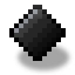
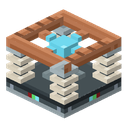
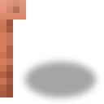
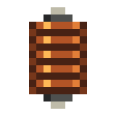
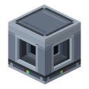

電撃モブトラップ
alaindustrial:electric_mob_trap
概要
電気モブトラップ（ティア I）は忌避装置の対になるブロックです。忌避装置が敵対モブを追い払うのに 対し、トラップは敵対モブを集めて資源に変えます。一辺 12 ブロックの立方体（中心から各軸に 6 ブロック）の範囲からモブを 弱く引き寄せ、リングの 3 ブロック以内に来たモブに電撃を与え、落としたものをすべて回収します。アイテムは 9 スロットの バッファへ、経験値は液体経験値のタンクへ入ります。戦利品はパイプが運び出します。ケーブルとパイプは 4 つの側面と下面に つながり、上面には何もつながりません。
トラップはモブを生成しません。スポーンの制御はプレイヤー自身が行います（暗い足場、明るさ、面積、高さは通常のモブ 農場と同じ）。トラップはそこで湧いたモブを集めるだけです。
簡単な例： 暗いスポーン足場の上にトラップを置き、下からアイテムパイプをチェストへ、側面の 1 つに LV ケーブルを つなぎます。足場のゾンビ、スケルトン、クモがリングへ寄ってきて電撃を受け、骨・火薬・糸がひとりでにチェストへ入ります。
対象と対象外
トラップはすべてのモンスターを対象とします。怒っている中立モブも穏やかな中立モブも含みます（2026-10-15 のオーナーの 決定）。ただし独自の例外があります。この点で忌避装置より広く、忌避装置はゾンビ化ピグリンの群れを怒らせないよう穏やかな 中立モブには触れません。トラップにはその心配がありません。誰もターゲットにしないため、穏やかなゾンビ化ピグリンに電撃を 与えても周りの仲間は目を覚ましません。
| 対象 | 動作 |
|---|---|
| 通常のモンスター（ゾンビ、スケルトン、クリーパー、クモなど） | 引き寄せられ、電撃を受ける |
| 中立モンスター（エンダーマン、ゾンビ化ピグリン、ピグリン、昼間のクモ） | 引き寄せられ、電撃を受ける。穏やかでも対象 |
| 本MODの石油スライム | 他の敵対モブと同様に対象 — ゴム農場は可能 |
| スライム、ファントムなど経路探索を持たないモブ | 押し出しで引き寄せられ（下記参照）、電撃を受ける |
| ピグリン、ホグリン、ゾグリン、ブリーズ、クリーキング（ブレイン駆動のモブ） | 引き寄せられる：トラップが脳に直接歩行目標を設定する |
| プレイヤーを追っているモブ（ターゲットがプレイヤー） | プレイヤーを忘れて引き寄せられる。そうしないと、そばにプレイヤーが立つ農場は何も引き寄せられない |
| エンダーマン | 電撃を受け、テレポートしない：放電はトラップの偽プレイヤーの名義で行われる（「戦利品と経験値」参照） |
| シュルカー | 完全に除外：引き寄せも電撃もしない |
| ボス：エンダードラゴン、ウィザー、ウォーデン | 完全に除外：引き寄せも電撃もしない |
| サバイバルまたはアドベンチャーのプレイヤー | 電撃半径内に立っていると電撃を受ける（2026-10-15 のオーナーの決定）。引き寄せられない |
| クリエイティブのプレイヤーまたはスペクテイター | 対象外 |
| 村人、ペット、受動的モブ | 対象外 |
| 稼働中の忌避装置の範囲内にいるモブ | 対象外（「同じ範囲にある忌避装置」参照） |
ボスは型のリストで除外する必要があります。一般的な敵対フィルターはボスを通してしまい、ゲームに「ボス」タグがないためです。 シュルカーも同じ方法で除外されます。他のMODのボスはこのリストの対象外で、そのMOD自身の問題です。
エネルギー
LV の消費機器。待機時の消費はなく、エネルギーは命中した電撃に対してのみ支払われます。
| 項目 | 値 | 設定項目 |
|---|---|---|
| 電撃 1 回のコスト | 100 EU/FE | |
| エネルギーバッファ | 10000 EU/FE（約 100 回分） | （新しく置いたブロックに適用） |
| 受電 | 最大 32 EU/FE/t（LV） | — |
- ケーブルは 4 つの側面と下面につながります（）。上面はモブがやって来る側で、ケーブルはつながらず、腕も 伸ばしません。側面ではケーブルはソーラーパネルと同じように低い位置でトラップに接します。 腕は台座の板まで下がり、その上を通って放電ギャップの下の板まで伸びます。碍子の間の開いた側面に差し込まれることは ありません。下からはどのブロックとも同じく、セルの中央でつながります。
- 電撃 1 回のコストは 100 EU/FE。命中した電撃にのみ支払われます。ダメージが通らなかった場合（無敵のモブ、直前の被弾による 無敵時間）はエネルギーを消費しません。体力 20 のゾンビで約 500 EU/FE。ピーク時のトラップの要求は 40 EU/FE/t（8 回 × 100 EU/FE / 20 ティック）で、LV の上限（32 EU/FE/t）を上回ります。10000 EU/FE のバッファがピークを支え、長期的には LV 給電で毎秒約 6 回の 電撃になります。
- エネルギーがなければトラップは何もしません。電撃も引き寄せもしません。範囲内に対象がいてもエネルギーが電撃 1 回分に 足りなければ、誰も引き寄せないうちにパルスは「エネルギー不足」ステータスで終わります。エネルギーは電撃ごとに全額を確認します。
引き寄せ
パルス。トラップは 20 ティックごと（）のパルスで動作します。パルスの間は休止しますが、 次のパルスを越えて休むことはありません。スケジュールは保存されず、ワールドの再読み込み後は最初のティックで動作します。 1 回のパルスは次のように進みます。
- 箱が範囲の立方体と交差する適格なモブをすべて取得する（「対象と対象外」参照）。
- 対象なし — 「モブ待ち」ステータス、何も消費しない。
- エネルギーが電撃 1 回分未満 — 「エネルギー不足」ステータス、それ以上は何もしない。
- バッファに空きがない（空きスロットも上限未満のスタックもない） — 「バッファ満杯」ステータス、それ以上は何もしない： バッファが満杯だと電撃も引き寄せも止まります。
- それ以外は、対象をブロック中心からの距離順に並べ、同距離なら UUID 順（ワールドが返した順序に依存しない）。その後、 各モブは電撃半径内なら電撃を受け、そうでなければ引き寄せられます。
「電撃中」ステータスは、そのパルスで少なくとも 1 回電撃が命中した場合にのみ設定されます。lit 状態はパルスの結果に 依存せず、トラップに電力が来ていることを示します（「ブロックの特性」参照）。
- サーバー側のみ、パルスごとに 1 回動作します。
- 範囲は一辺 12 ブロックの立方体です（ブロック中心から各軸 6 ブロック、設定項目 ）。別の 垂直方向の範囲はありません。共通の範囲プレビューは数値を 1 つしか運ばないため、描かれる立方体がトラップの作用範囲と ちょうど一致します。
- 1 回のパルスで誘導するのは最大 16 体（）で、実際に動き出させたモブだけを数えます。 中心に近い順、同距離なら UUID 順。サーバー上の経路再計算を抑えるための制限です。
- 引き寄せは弱く、よく作られた足場の代わりにはなりません。同じモブを誘導するのは 20 ティックに 1 回までです。
- プレイヤーを追っていたモブはプレイヤーを忘れます。そうしないと、オーナーがそばに立つ農場は何も引き寄せられません。 数ティック後にモブが再びプレイヤーに気づくことがありますが、次のパルスがまた引き離します。
- 経路探索を持つモブ（すべての
PathfinderMob）は、ナビゲーションによって通常の歩行速度でブロックへ誘導されます。経路が なければ引き寄せたことにはなりません。 - ブレイン駆動のモブ（ピグリン、ホグリン、ゾグリン、ブリーズ、クリーキング）には、トラップが脳に直接歩行目標を書き込み、 攻撃目標を消去します。通常のナビゲーション経路は脳がすぐに上書きしてしまうためです。
- 経路探索のないモブ（スライム、ファントムなど）は、パルスごとに 1 回、中心へ向かう小さな水平方向の押し出しを受けます。 これがないと石油スライムによるゴム農場が機能しません。
- テレポートはありません。
- すでに電撃半径内にいるモブは引き寄せられず、電撃を受けます。
電撃
- ブロック中心から 3 ブロック以内（、距離はモブの位置から測る）にいるモブに電撃を与えます。 引き寄せられたモブだけでなく、自分で来たモブも電撃を受けます。
- 1 パルスにつき最大 8 回（）。中心に近い順、同距離なら UUID 順。
- 1 回のダメージは 4（ハート 2 つ分、）で、ダメージの種類は「感電」（
electric_shock、ケーブルと 同じ）、防具は有効です。即死ではなくダメージです。体力 20 のゾンビは約 5 秒で倒れ、防具を着たモブはさらに時間がかかります。 - 電撃のたびにエネルギーとバッファの空きを再確認します。次の電撃分のエネルギーがない、または直前の電撃でバッファが 満杯になった場合、そのパルスの残りの電撃は行われません（引き寄せは同じパルス内で続きます）。
- 放電時には、ノードの閃光、開いた 4 つの側面を下へ走る青いジグザグの電弧（ブロックのレンダラーが描画、約 0.4 秒）、 モブの位置の
ELECTRIC_SPARKの火花、短いバチッという音（バニラの落雷の衝撃音を小さく高めに）が見られます。
戦利品と経験値
死は通常どおりです。モブは他のダメージと同じように倒れ、防具、頭、特殊ドロップ、死亡イベントが機能します。戦利品と 経験値オーブは、どの死の場合とも同じように地面に落ちます。その後トラップは、 真空コレクターと同じようにそれらを引き寄せます。
- 5 ティックごとに、トラップは自分の範囲（引き寄せと同じ立方体）を見回し、最も近い最大 16 個のアイテムと経験値オーブに 作用します。
- ブロックに触れたアイテムやオーブは回収されます。アイテムはバッファへ（入る分だけ）、経験値オーブは液体経験値タンクへ （丸ごとのみ）。それより遠いものは電磁石のようにトラップへ向かう押し出しを受け、テレポートではなく物理で飛んできます。
- 拾得の遅延があるアイテム（落ちたばかりのドロップ、プレイヤーが投げたアイテム）は遅延が終わるのを待ちます。溶岩の中の アイテムには触れません。近づかなくなったドロップ（壁の向こう、穴の中）は、トラップがしばらく放置します。
- 引き寄せは無料で、トラップの仕事の一部です。トラップは自分のモブの戦利品だけでなく、範囲内のあらゆるアイテムを 引き寄せます。近くに余計なものを置かないでください。
- 戦利品は通常どおりです。電撃のたびに、モブはトラップの無名の偽プレイヤー
[Electric Mob Trap]（メモリ上にだけ存在し、 ワールドには入らない）に「最近プレイヤーに攻撃された」と記録されるため、「プレイヤーに倒された」条件付きのドロップ （骨、火薬、糸 — 剣で倒したときと同様）と経験値が落ちます。トラップにドロップ増加（Looting）エンチャントはなく、ティア I は基本 ドロップです。 - 魂の器は成長しません。ダメージ源にエンティティがなくプレイヤーでもないため、魂の器は個人の 撃破しか数えず、忌避装置の育成はプレイヤーのものであり続けます。死亡メッセージが表示される場合は 「感電した」（
death.attack.electric_shock）です。 - エンダーマンはダメージ源の例外です。生きた攻撃者のいないダメージを受けるとエンダーマンはテレポートで逃げるため、 エンダーマンへの放電はトラップの偽プレイヤーの名義で行われます。その場合も魂の器は成長せず（偽プレイヤーは器を持たない）、 電撃で生じた怒りはトラップがすぐに解除します。
- 熟練度ポイントは付与されません（忌避装置と同様）。トラップはポイント稼ぎ農場になりません。
- アイテムは 9 スロットのバッファに入ります。バッファに空きがない間、トラップは電撃も引き寄せも行いません。 バッファの詳細は後述。
- バッファに入りきらなかったものはワールドに残ります。通常のアイテムとして残り、消えることはありません。空きが できれば、トラップはそれを取りに戻ります。
- 経験値は 1 ポイントあたり 20 mBの液体経験値に変換され、内部の 8000 mB の タンク（400 ポイント、、新しく置いたブロックに適用）に溜まります。ゾンビ約 80 体分です。液体は という名前で
c:experienceタグに入っており、他のMODと互換性があります。蒸気と同様に バケツも液体ブロックもなく、タンクとパイプの中だけに存在し、ワールドに撒くことはできません。タンクは液体パイプへ （4 つの側面と下面から。上面からは不可）液体を渡し、何も受け付けません。 - タンクが満杯 — オーブはワールドに残ります。経験値は黙って消えません。プレイヤーが自分で拾え、見える理由はトラップの 周りの地面にあるオーブです。オーブは丸ごと回収されるか、まったく回収されないかのどちらかで、タンクに丸ごと入らない オーブはワールドに残ります。タンクが満杯でも、それだけでは電撃は止まりません。
- 経験値オーブは 8 ブロック以内にプレイヤーがいると自分でプレイヤーへ飛んでいきます。トラップのそばに立つプレイヤーは、 トラップより先に経験値を受け取ることがあります。
バッファと輸送
- 出力スロットは 9 つ。スロットの上限はアイテムのスタックサイズ（ただし最大 64）で、通常アイテム最大 576 個です。
- GUI は機械画面です。取り出し専用の 3×3 スロット、左にエネルギーバー、右に液体経験値タンク（「液体：N / 容量 mB」の ツールチップ付き）、ステータス行、範囲をプレビューする「目」ボタン（忌避装置や真空コレクターと同様で、範囲の立方体を 表示）があります。アップグレードパネルはありません。パルス周期以上にチップで速くできるものがないためです。ステータス行 の値：「電撃中」「モブ待ち」「バッファ満杯」「エネルギー不足」（後ろの 2 つは停止要因で、停止として強調表示されます）。
- アイテムは取り出せますが入れられません（手でも、ホッパーでも、パイプでも不可）。
- トラップ自身は何も押し出しません。アイテムパイプはバッファから自力で取り出し、液体パイプはタンクから液体経験値を 取り出します。ケーブル、アイテムパイプ、液体パイプは 4 つの側面のどれにも、また下面にもつながります（）。 この 5 つの面はどれもエネルギーを受け取り、戦利品と液体経験値の両方を渡します。側面ではパイプもケーブルと同じく 低い位置でトラップに接します。上面は何にもつながりません：エネルギーもアイテムも液体も通らず、ケーブルもパイプも そこへ腕を伸ばしません。
- パイプがなければバッファが埋まり、プレイヤーが空きを作るまでトラップは電撃も引き寄せも止まります。
同じ範囲にある忌避装置
忌避装置が優先されます。忌避装置は掃引のたびに範囲の短い「リース」を更新します（スキャン間隔 2 回分 + 1 ティック）。箱がそのような有効なリースの範囲と交差するモブを、トラップは引き寄せも電撃もしません。壊れた、レッドストーン で停止された、またはエネルギー切れの忌避装置は掃引をやめ、リースは数回の掃引で失効して、モブは再びトラップの対象に なります。そのため、忌避装置の範囲内にトラップを置かないでください。モブはリングに届く前に追い払われます。
ブロックの特性
モデルは選ばれたコンセプト E「Spark Ring」（tools/model_sources/electric_mob_trap_concepts/e_spark_ring/）です。4 本の セラミック碍子の連なりに支えられた銅のリングと、中央の支柱に載った放電ノードで構成されます。モデルのサイズは 16×12×16 ピクセルで、選択範囲と衝突判定は同じ 16×12×16 の箱で、一度だけ構築されます。向きはなく、リングはどの側面から見ても 同じです。ブロックはフルキューブではないため、オクルージョン形状は空で光が通ります（真空コレクターと同様、隣接ブロックの 面が失われず、セルは角の影を落としません）。 は使いません。
| 項目 | 値 |
|---|---|
| 形状 | 碍子上のリング、16×12×16 px、箱全体が固体 |
| 接続 | 4 つの側面と下面：エネルギー、アイテム、液体経験値。上面：なし。側面ではケーブルとパイプが低い位置で接する（腕は 2..8 px）。ケーブルは腕を内側へ 5 px 伸ばし、放電ギャップの下の板まで届く |
| 硬度 | 3.0 / 6.0、金属。道具：ツルハシ |
| 状態 | lit — バッファに電撃 1 回分のエネルギーがある（トラップに電力が来ている） |
| アニメーション | 電力が来ている間（lit）ノードが脈動する（アニメーションテクスチャ、.png.mcmeta）。エネルギーがなければノードは静止。電撃の瞬間はノードが閃光を放つ |
| 描画 | ブロックのレンダラーが開いた 4 つの側面を下へ走る青いジグザグの電弧を描く（約 0.4 秒）。モブの位置ではバニラの ELECTRIC_SPARK パーティクル |
| サウンド | MOD独自のサウンドはなし。電撃時にバニラの LIGHTNING_BOLT_IMPACT（音量 0.35、ピッチ 1.8）を再生 |
レシピ
3×3 全マスの成形クラフト：中央に真空コレクター、その上に避雷針、下に電子回路、 左右に銅コイル、四隅にセラミックプレート。
[セラミックプレート] [避雷針] [セラミックプレート]
[銅コイル] [真空コレクター] [銅コイル]
[セラミックプレート] [電子回路] [セラミックプレート]入手方法はこれだけです。トラップは成長も強化もしません。この文書はティア I のみを規定します。
進行
ティア I は通常の農場向けの「弱い」トラップです。タンクの液体経験値は蛇口（）で 経験値オーブとしてプレイヤーに戻ります：トラップの真下に吊るすか、液体パイプの先に付けます。今後の発展（ の 範囲外の別タスク）：エンチャントによるドロップ増加、 の種ジャーナル。
関連
- 小型モブ忌避装置 — トラップの対になる存在。トラップより優先される。
- 魂の器 — トラップは魂の器を満たさない。
- 真空コレクター I — 装置の手本でありレシピの材料。
- タスク — オーナーの決定と調査。
- タスク — 上面以外のすべての面への接続。
クラフト
定型クラフト



▶
電撃モブトラップ